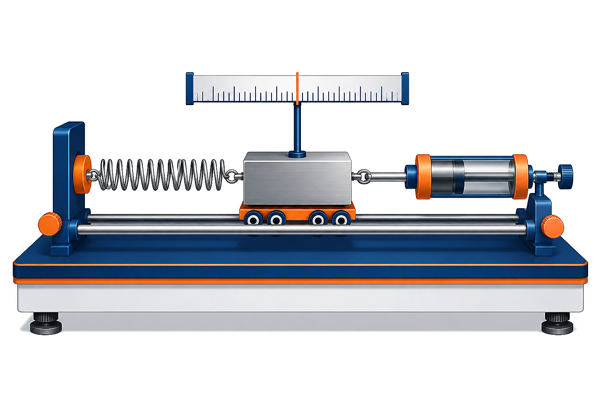

机械位移实验装置

力学模型
k（弹簧）
f（阻尼器）
m
F（外力）
x（位移）
① 定输入输出
\text{外作用力 F —— 输入量，位移 x —— 输出量}
② 列写方程
根据牛顿定律：
F + F_{\text{弹}} + F_{\text{阻}} = m\cdot a
，且
F_{\text{弹}} = -kx
，
F_{\text{阻}} = -f\dfrac{dx}{dt}
③ 消元标准化
考虑
a = \dfrac{d^{2}x}{dt^{2}}
，得
m\dfrac{d^{2}x}{dt^{2}} + f\dfrac{dx}{dt} + kx = F